← Volver al portafolio
Veterinaria Jessi
Cliente real
Sistema interno
Sistema de gestión clínica para una veterinaria: pacientes con ficha e historial clínico, visitas con receta descargable, agenda de citas, catálogo de medicamentos, stock con costos y vencimientos, y las finanzas del negocio con reportes mensuales. Es una herramienta interna con login — no hay demo pública. Los datos que se ven en las capturas no son de pacientes reales: son datos de prueba, y lo sensible va además ofuscado.
El día a día clínico
Del listado de pacientes a la receta: ficha, historial y el detalle de cada visita.

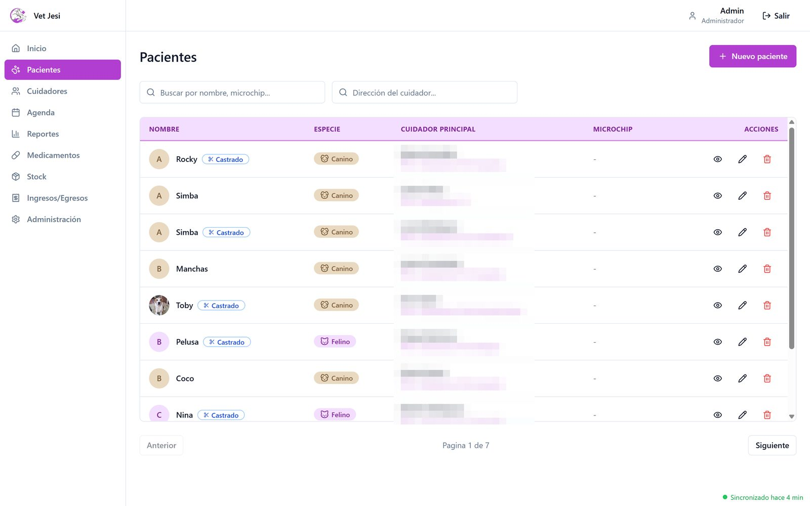
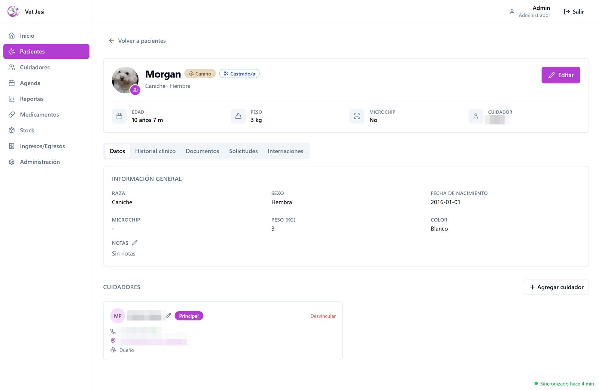
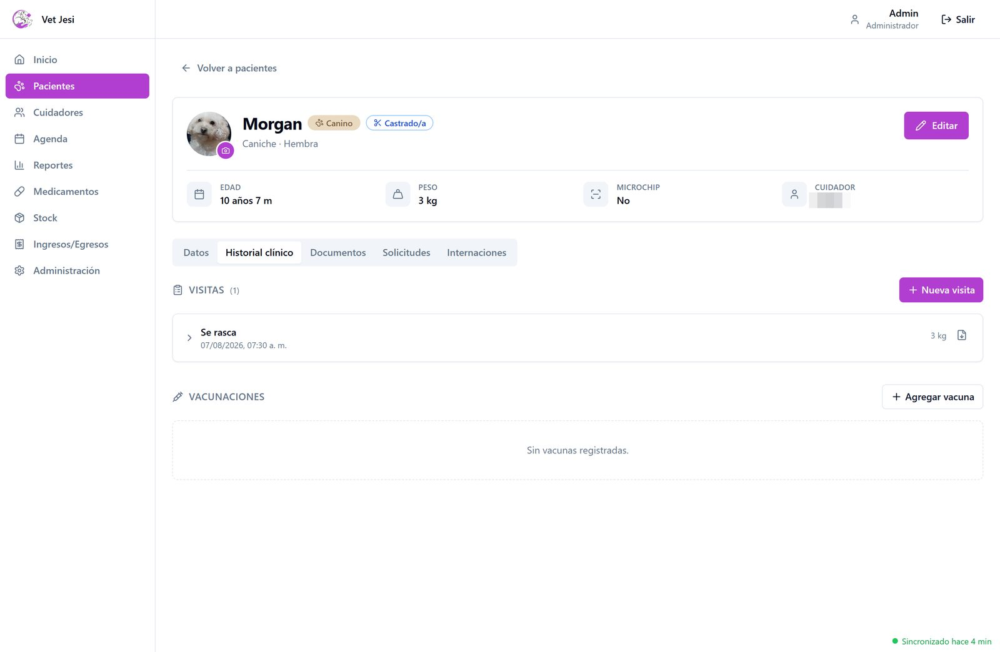
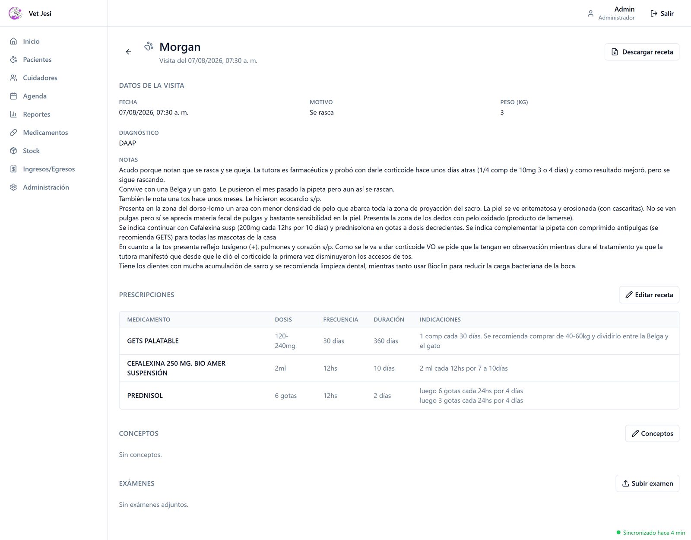
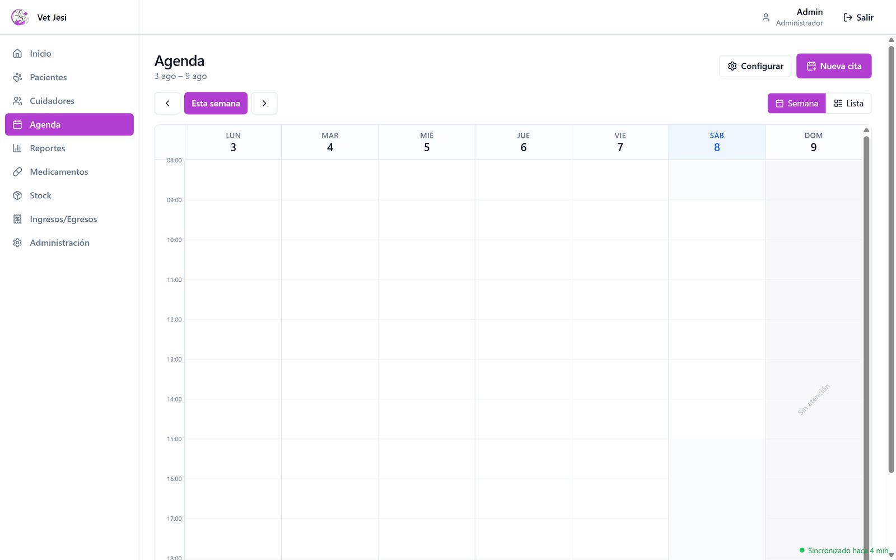
La administración del negocio
Cuidadores, catálogo de medicamentos, stock y finanzas — todo en el mismo sistema.
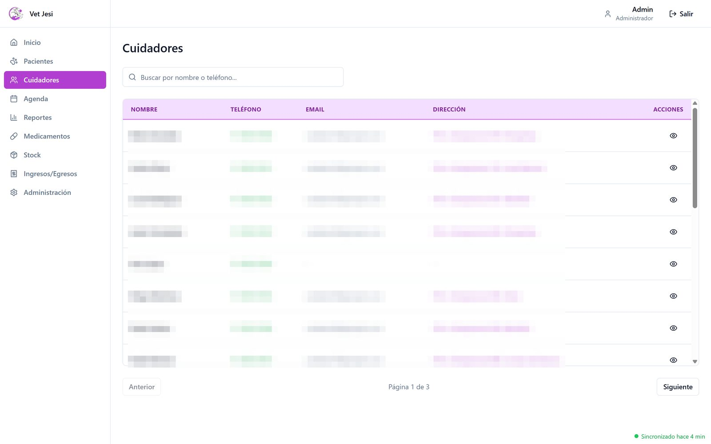
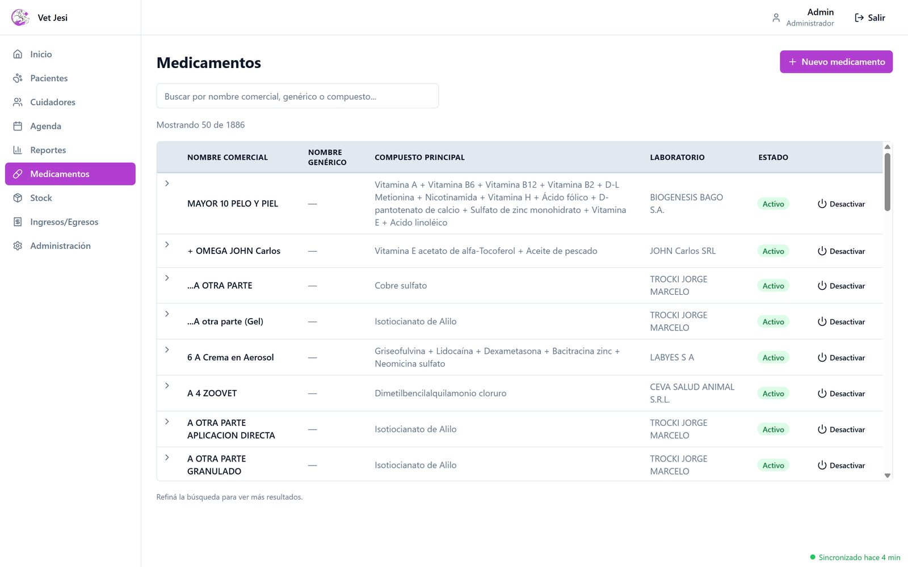
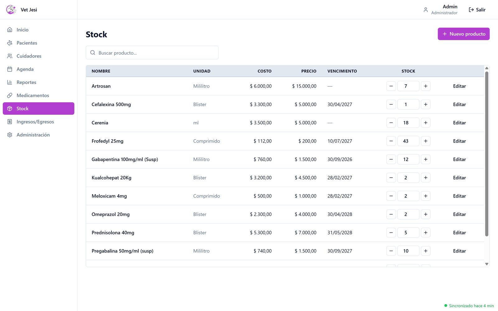
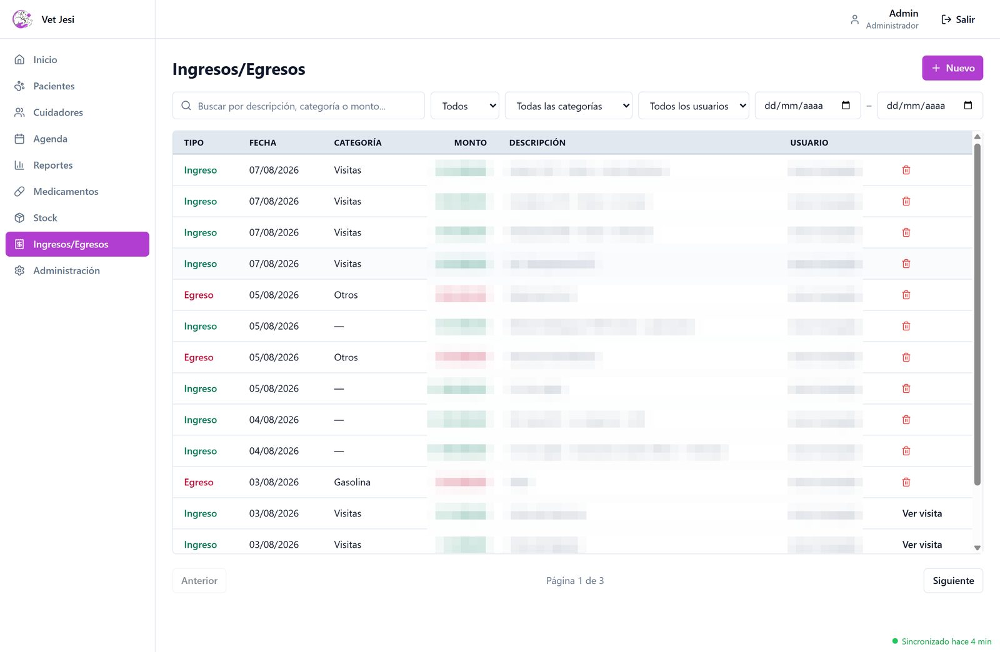
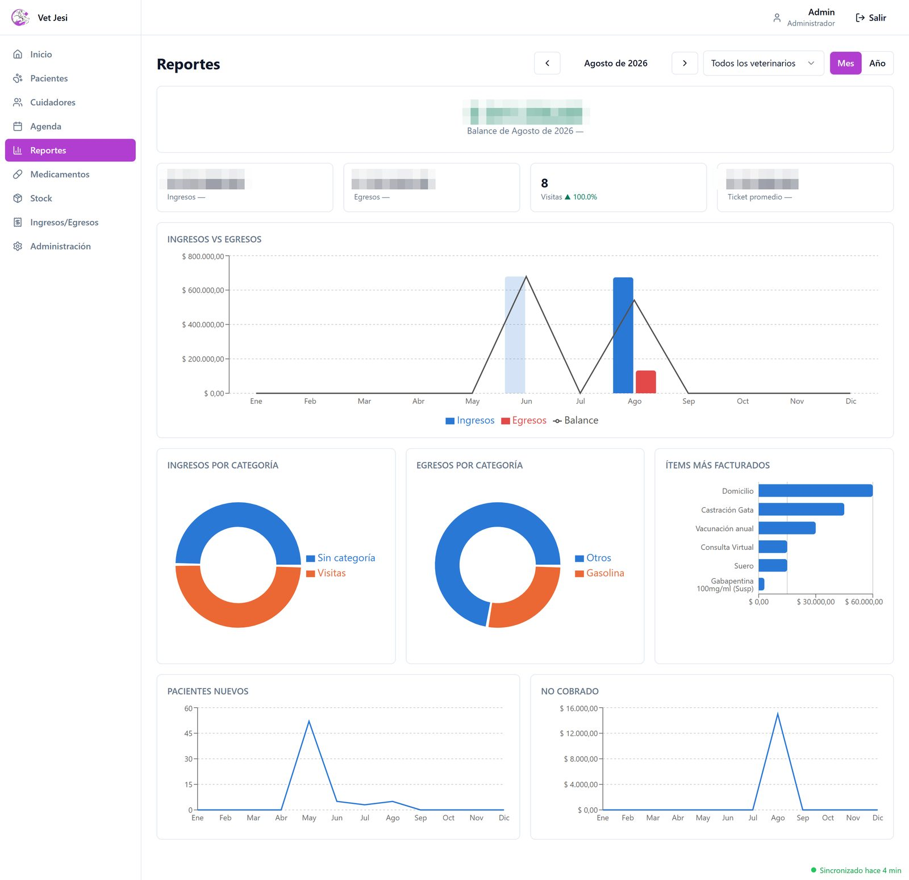
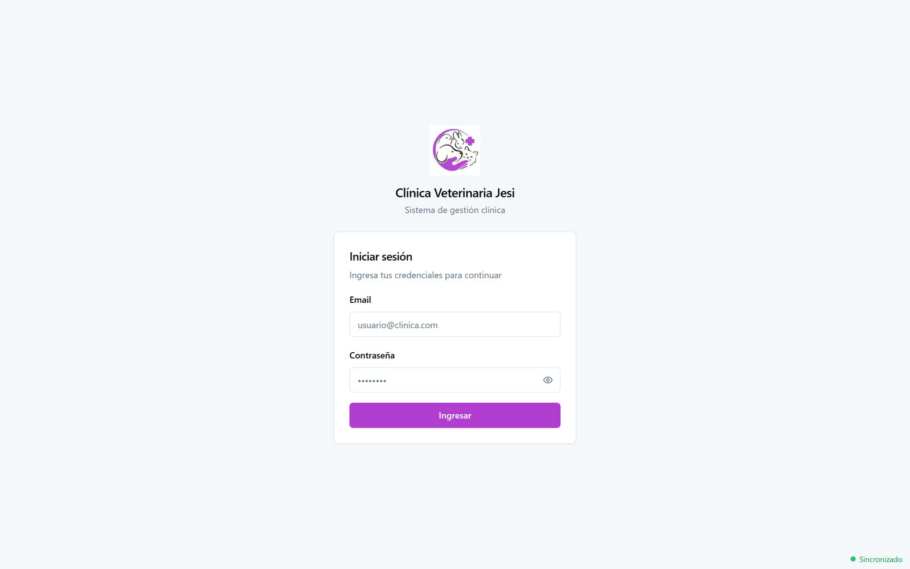